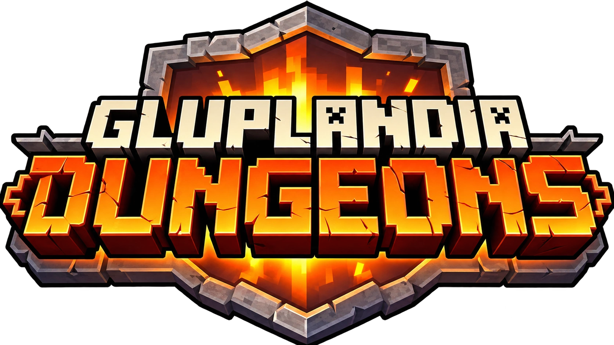
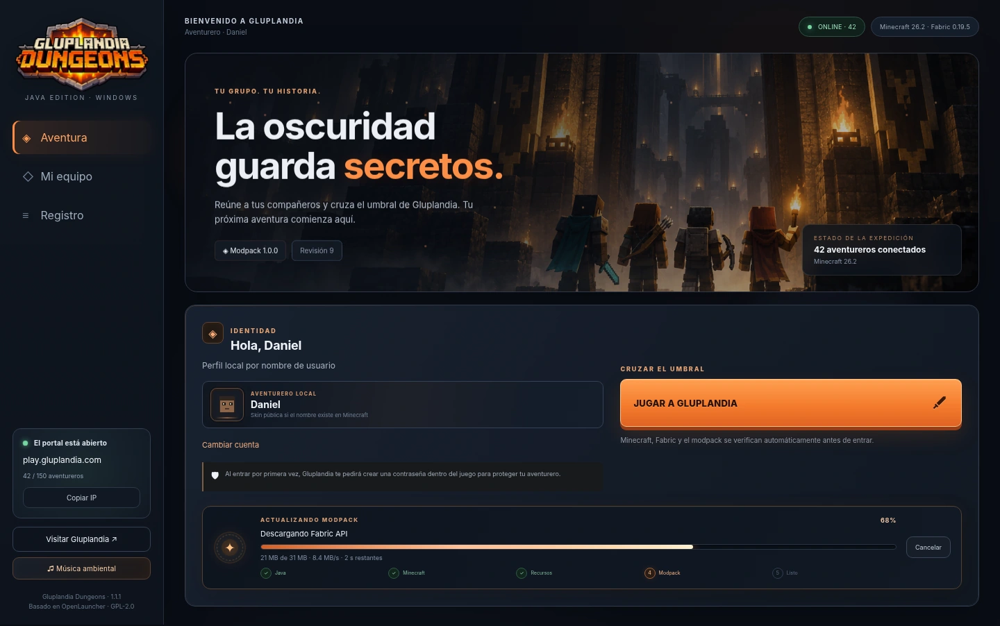
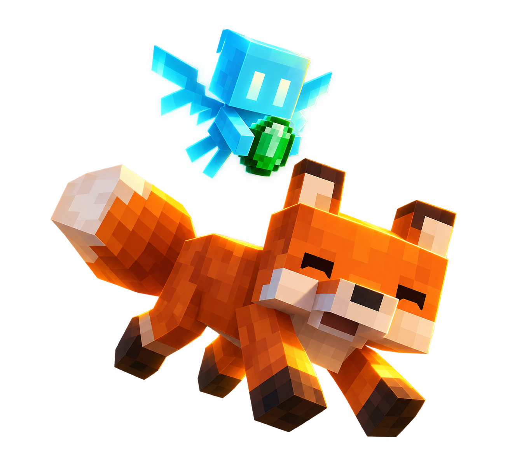

Un cliente preparado.
El launcher reúne la preparación del juego y del paquete de Gluplandia antes de entrar.

EL PORTAL EMPIEZA AQUÍ
Tu aventura tiene un punto de partida. Prepara el cliente de Gluplandia desde una aplicación creada para nuestro mundo y deja tu equipo listo para explorar.
El instalador se descarga desde el repositorio de Gluplandia. El servidor continúa en preparación para su apertura.

El launcher reúne la preparación del juego y del paquete de Gluplandia antes de entrar.
Consulta las actualizaciones desde la aplicación y revisa el progreso de sus descargas.
La opción de cuenta Microsoft completa la autenticación en la página de Microsoft.
La dirección de Gluplandia está integrada para tener el mundo siempre a mano.
DEL ESCRITORIO A LA AVENTURA
Elige tu forma de acceso y marca los pasos que completes. Esta guía te acompaña durante la preparación.
La descarga disponible es para Windows de 64 bits. Empieza por el instalador publicado en nuestro repositorio.
El launcher ya dispone de una descarga. La disponibilidad del servidor se anunciará por separado.
También puedes preparar Minecraft Java desde el launcher oficial. El cliente de Gluplandia concentra en una aplicación la preparación de nuestra experiencia.
Si prefieres una preparación guiada de nuestro cliente para Windows, utiliza Gluplandia Launcher.
El instalador de Gluplandia Launcher es para Minecraft Java en Windows. La información de acceso desde Bedrock se confirmará antes de la apertura.
Publicaremos el puerto y los detalles de compatibilidad cuando estén preparados para la comunidad.
Puedes explorar la web y guardar la dirección mientras se confirma el acceso de tu edición.
UNA DESCARGA CON ORIGEN CLARO
El botón enlaza al instalador publicado en el repositorio del launcher. Puedes consultar las versiones y comprobar la huella del archivo descargado.
Consultar versionesVersión enlazada verificada en el repositorio.
07abccdbad32e01e98bda9ff988fd0749fdde6e60915f2c1ad4d849799c8cd9d
La opción Microsoft abre su página de inicio de sesión. Completa allí la autenticación y vuelve al launcher cuando termine el proceso.
ANTES DE CRUZAR EL PORTAL
Algunas respuestas para que la preparación no interrumpa la aventura.
La descarga procede de las versiones publicadas por Gluplandia en GitHub. Puedes revisar la versión enlazada y su huella en el apartado anterior.
El launcher incluye una modalidad de acceso que utiliza tu cuenta Microsoft para obtener el perfil de Minecraft Java. El inicio de sesión se realiza en la página de Microsoft.
La versión publicada que enlazamos es para Windows x64. Puedes usar el launcher oficial de Minecraft para preparar tu cliente en otras plataformas y consultar las instrucciones de la comunidad.
Este launcher prepara Minecraft Java. Los detalles de acceso a Gluplandia desde Bedrock se anunciarán por separado.
Comprueba tu conexión y el espacio disponible. Revisa el mensaje que muestra la aplicación antes de reintentar. Si el problema continúa, conserva una captura del error para pedir ayuda.
Comprueba que el archivo procede del repositorio enlazado y revisa los datos del aviso. Puedes comparar su huella SHA-256 con la publicada antes de decidir cómo continuar.

GUARDA TU PRÓXIMO DESTINO
Prepara el cliente mientras Gluplandia toma forma.
play.gluplandia.com